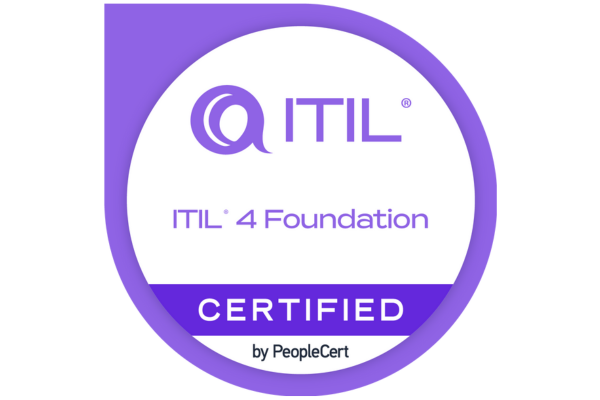

Ryan Roehler
IT Management · CompTIA Security+ Certified
Accomplished IT leader with 10+ years of military contracting experience, TS-SCI clearance, and a proven ability to lead cross-functional teams in high-stakes environments. Adept at managing complex IT operations, driving strategic initiatives, and translating technical insights into actionable outcomes. Currently supporting enterprise IT operations at Nucor Towers & Structures Indiana — covering device management, identity administration, and end-user support — with a background in intelligence analysis and FMV/ISR instruction. Pursuing dual degrees in IT and Data Analytics to deepen technical expertise and expand strategic impact.
Seeking to leverage my IT management background and people management skills to contribute to a dynamic team in a challenging role.
Certifications
- CompTIA Security+
- CompTIA A+
- CompTIA Network+
- ITIL 4 Foundations
- Linux Essentials


Experience
IT Operations Technician
- Administer Microsoft Entra ID and Intune for enterprise device fleet — managing sign-in activity investigation, device enrollment, primary user assignment, and Autopilot provisioning for new hardware
- Perform end-to-end device imaging and OS deployment using Ventoy and Windows media tools, including driver installation, hardware identification, and post-deployment configuration
- Troubleshoot enterprise print infrastructure, including DRA (Document Routing Agent) connectivity, network printer configuration, and Zebra label printer integration across multiple sites
- Resolve end-user tickets in FreshService spanning application conflicts, print/PDF errors, account provisioning, and device compliance issues
- Coordinate with cross-functional systems including Oracle procurement (PO tracking) and D365 to support hardware purchasing and asset records
- Evaluate and recommend hardware specifications for procurement decisions across laptops, tablets, and peripherals
IT Project Manager
- Key accomplishment: Led the organization's migration from on-premise Active Directory to Microsoft Azure cloud directory, managing the transition of 6,500+ devices across three military bases (AL, VA, AZ) and supporting external partner organizations
- Acted as both Project Manager and SME during the migration, holding a weekly meeting to provide milestone updates, insights, troubleshooting steps, and statuses to key stakeholders — one of only two individuals to proactively master the new system and lead implementation
- Directed strategic task alignment for 43 IT professionals, improving project delivery timelines and operational efficiency by 30%
- Facilitated strategic-level discussions between contract and government leadership, enhancing collaboration and mission alignment
Help Desk Coordinator
- Led daily operations for a help desk supporting 5,000+ users, managing a team of 12 technicians and 2 logisticians to maintain 98% customer satisfaction
- Diagnosed and resolved complex technical issues, implementing scalable solutions that reduced recurring incidents by 30%
- Transformed user issue data into actionable visual reports for stakeholders, improving transparency and decision-making
- Designed and enforced escalation protocols, improving resolution speed and reducing ticket backlog by 40%
Tier 1 IT Support Specialist
- Delivered end-to-end technical support for hardware and software issues, including RAM upgrades, system convergence, and connectivity troubleshooting
- Ensured seamless onboarding by validating network access and resolving configuration gaps for new users
- Maintained real-time help desk coverage, logging and resolving tickets with a 95% first-call resolution rate
- Proactively patched and updated systems, maintaining security compliance and reducing vulnerabilities across the network
Intelligence Training & Analysis Leader | FMV / ISR Specialist
- Designed and led training programs for 300+ FMV/ISR analysts and 30+ on-the-job trainers across global sites, standardizing instruction and improving analyst readiness
- Delivered expert instruction on ISR asset deployment, geospatial techniques, and intelligence cycle operations in joint-force environments
- Advised collection managers and senior decision-makers on asset utilization, ensuring alignment with mission-critical objectives
- Produced high-impact intelligence products — storyboards, imagery, videos, and reports — supporting time-sensitive operations
- Conducted advanced FMV exploitation and geo-locational analysis to extract actionable intelligence for tactical teams
- Partnered with clients to refine training frameworks and SOPs, enhancing consistency and operational effectiveness across units
Education
Bachelor of Science in Information Technology
- Expected graduation: April 2026
- Relevant coursework: Web Development Fundamentals, Data Structures, Introduction to UI/UX
Technical Proficiencies
| Category | Skill | Level | Years |
|---|---|---|---|
| Soft Skills | Team Leadership | Advanced | 8 |
| Soft Skills | Leadership Briefing | Advanced | 14 |
| Soft Skills | Training & Development | Advanced | 5 |
Add additional rows here as you expand your technical skills table.